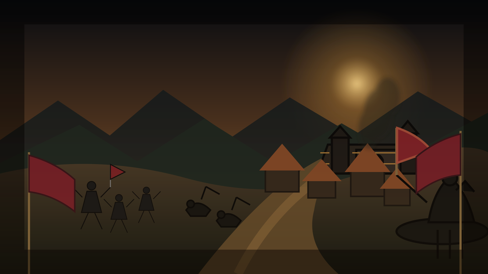

Roman
Order, economy and a powerful late game.
CRUSADER TRAV · CLASSIC T3.6 · HIGH SPEED
A classic strategy world rebuilt for players who want the village, the rivalry and the war — without the waiting.

Grow a village from nothing. Build your economy. Scout the horizon. Find an alliance. Then decide how far you are willing to go.
Crusader Trav keeps the familiar three-tribe strategy loop and gives every decision more momentum. Construction, expansion and war happen sooner, so the map becomes alive early.
Discover the season →Roman, Teuton or Gaul. Pick the identity that fits the way you want to rule the map.
Order, economy and a powerful late game.
Pressure, raiding and relentless aggression.
Speed, defense and adaptable strategy.
High-speed progression, faster armies and an active map from the opening hours. The classic rhythm is still here — the downtime is not.
Diplomacy, farming, scouting and full-scale alliance warfare. Your season is shaped by the people who share the map with you.
Meet the community →Create your commander and take your place on the map.